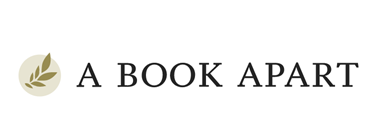
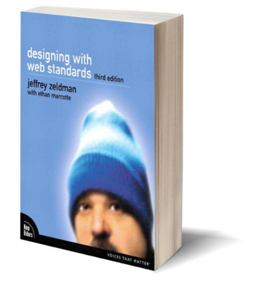
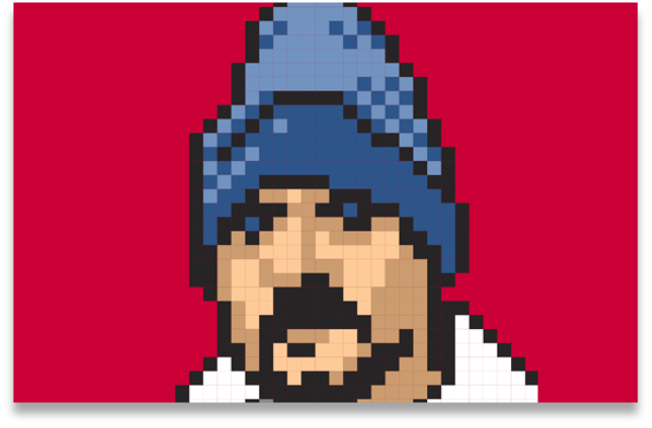

In 1995 during the midst of the internet boom, Jeffrey Zeldman would begin his web design career designing websites for clients and running a web design blog, zeldman.com. Over his nearly 25 years of experience in designing for the web, he and his colleagues have made a tremendous impact on the web design industry today. He is the author of several award-winning books, the co-host of a podcast, and speaker at international design conferences. He was also the first to be inducted to the SXSW Interactive Hall of Fame in 2012.
Without the influence Zeldman had on the web design industry in the late 1990s, the standards for web design we have today may never have been implemented. Zeldman co-founded a project that brought HTML, CSS, and Javascript standards to web browsers. This was a movement they called The Web Standards Project. At the time, Netscape Navigator was competing with Internet Explorer for the world’s most used browser, however Zeldman believed that it was wiser to develop websites that would be optimized for all web browsers as more would begin to appear in the 2000s such as Firefox, Safari, Google Chrome, and Opera.
Zeldman has written several books, but his most popular work is about web standards. He wrote Designing with Web Standards with web designer Ethan Marcotte, most popular for coining the term “responsive web design”. Together they wrote 3 versions of the publication that have been utilized as course textbooks in universities around the world. On top of writing books, he also co-founded a publishing company called A Book Apart that publish books on web design. It was under this publishing company that Marcotte published his famous Responsive Web Design book that has heavily changed the way websites are designed in the 2010s era.
 If designing websites, writing books, and running a publishing company wasn’t enough, Zeldman was also hard at work with his own design studio Happy Cog which he had maintained since 1999. He designed a website for Warner Bros. during this time that would end up receiving 1.5 million unique visitors, which was half of the entire internet’s userbase. From this moment on, he continued designing websites for more clients, as well as teaching his craft through his mailing list ‘A List Apart’ which eventually became an international web design conference ‘An Event Apart’, which were businesses that partnered with A Book Apart.
Jeffrey Zeldman’s philosophy for web design has not changed since the days of Aol, Netscape and Mosaic. His belief is that web design is not about the technology, it’s about the people. Building an experience for the user is the most important part of web design. He heavily highlighted the importance of community through his many business ventures that helped shape the landscape for web design. Although he goes unnoticed by the masses, his work has left a major impact in the design world today.
